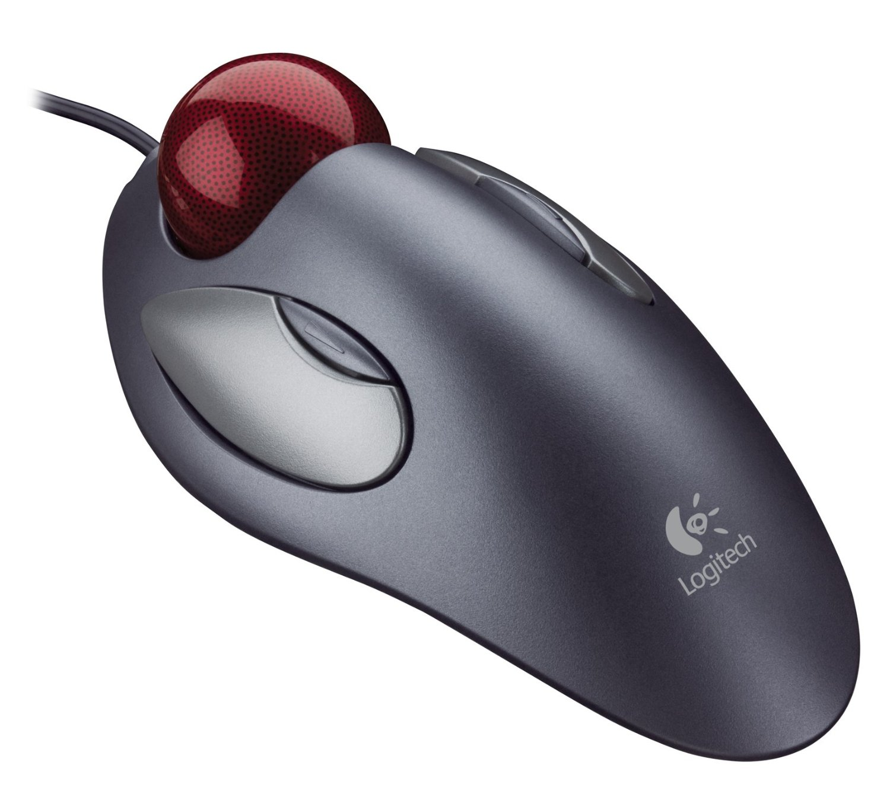

wsg - non-random wandering
Table of Contents
Emacs hacking
Org-mode file bundled with executable synchronization code
I've been experimenting for a while with ways to get some kind of
file synchronization mechanism for my Org-mode files, without
having to resort to Dropbox, Google Drive or the likes. I started
out by writing some Elisp code to handle the sync process for me,
but than tried an alternative approach. I figured, since Org-mode
allows me to have executable source code blocks, I could use that -
combined with a certain degree of introspection on the Org file's
part - to bundle synchronization functionality with the file
itself.
For starters, I wanted to store the path to the remote file1
(to which I'll be synchronizing) as a named field. This can be done
e.g. using #+BEGIN_EXAMPLE:
#+name: remote-path #+BEGIN_EXAMPLE /scp:<my-remote-hostname>:/path/to/my/remote/file.org #+END_EXAMPLE
Having such a snippet in my file will allow me to refer to its
content using the identifier remote-path.
Next, I added an Elisp snippet that syncs the file out to the remote location:
#+name: push
#+BEGIN_SRC emacs-lisp :var remote=remote-path :results output silent
(save-buffer (current-buffer))
(make-directory (file-name-directory remote) t)
(copy-file buffer-file-name
remote 1)
(message "Synced file to %s" remote)
#+END_SRC
Let's have a quick rundown of the snippet. First of all, I've
called it push for easy reference (to be used later). I used the
:var keyword to define a block-local binding available for use
in the code (in my case a variable remote bound to the value of
remote-path - my #+BEGIN_EXAMPLE block above). The :results
output silent bit avoids inserting the results of code execution
into the file. What the actual code does is:
- ensure the buffer is saved
- ensure the remote directory exists
- do the actual copy
- generate a message to the user
I also added a mirror image of the above snippet - in charge of copying changes from the remote server:
#+name: pull #+BEGIN_SRC emacs-lisp :var remote=remote-path :results output silent (save-buffer (current-buffer)) (copy-file remote buffer-file-name 1) (revert-buffer t t) (message "Synced %s to file" remote) #+END_SRC
Again, a rundown:
- save current buffer
- copy the remote file to local file system
- revert contents of the current buffer
- generate a message to the user
Now, this in itself already does the trick, but it requires you to
navigate to the appropriate code block, depending on which action
you want. What seemed to me the natural next step was to have some
code in my .emacs file that would make it easier by automatically
finding the right code block and executing it. This turned out to
be relatively simple. I came up with the following Elisp function:
(defun org-sync-current-file (prefix)
(interactive "P")
(let ((action
(cl-case prefix
((nil) "push")
(t "pull"))))
(save-excursion
(org-babel-goto-named-src-block action)
(org-ctrl-c-ctrl-c))))
I decided for the function to dispatch based on the prefix
argument: no prefix means push, prefix means pull. The function
retrieves the appropriate code block - either push or pull -
and executes it. Depending on your Org-mode settings, Emacs might
at this point ask you for confirmation before actually executing
the code. One final touch to make this more usable is to pick some
reasonable key binding. In my case F12 seemed a decent choice:
(define-key global-map (kbd "<f12>") 'org-sync-current-file)
The above solution might not be what you'd consider a reliable synchronization system. Rather, it should be regarded as an interesting - if somewhat contrived - exercise in blurring the lines between data and behavior.
Hardware Configuration
The Zen of trackball configuration
Ever since I saw them in a Logitech marketing booklet as a kid, I've been fascinated by trackballs. I would sometimes say to myself: How cool! Instead of moving the mouse, here you move the whole Universe to get the cursor to do your bidding. I tried imagining how much fun using one would be. The prices, however, were prohibitively high for a kid's whim. Then one day, many years later, I saw the Logitech Trackman Marble discounted at a nearby store and bought it without thinking twice. It was everything I imagined it would be and more. Getting used to the new way of doing things took me around 15 minutes. Another day and I felt proficient. Having by then already switched to GNU/Linux, I was confronted by the question of configuring this thing under Xorg. This part turned out to also be fun, but with a much more masochistic touch :). Below I'll describe my standard configuration for the Trackman Marble and make some more general comments about key mapping. Recently I bought another trackball - the CST 2545-5W Laser Trackball. The principles underlying its configuration remain unchanged, although a different button layout necessitates some changes.

Figure 1: Logitech Trackman Marble
The Xorg configuration for trackballs resides in a file
10-evdev.conf. On Debian derivatives, such as Ubuntu, this file
is typically located in /usr/share/X11/xorg.conf.d. For systems
with a more traditional file layout (such as OpenBSD) a good place
to put the configuration might also be /etc/X11/xorg.conf. Here's
the configuration bit:
Section "InputClass"
Identifier "Logitech USB Trackball"
# MatchVendor "Logitech"
MatchProduct "Trackball"
Option "ButtonMapping" "1 8 3 4 5 6 7 2 8"
Option "EmulateWheel" "True"
Option "EmulateWheelButton" "8"
Option "ZAxisMapping" "4 5"
Option "XAxisMapping" "6 7"
Option "Emulate3Buttons" "true"
EndSection
Let's quickly go through various items in that entry:
IdentifierandMatchProductmatch a particular model's information (as discoverable usinglsusb).ButtonMappingspecifies which physical buttons will emit which button actions. More on this below.EmulateWheeldetermines whether there should be a button which will make the ball act as a 2-dimensional scroll wheel instead of moving the cursor.EmulateWheelButton- which button should that be (in my case - small left button).ZAxisMappingandXAxisMapping- which button actions (or ball motions) should scroll in different directions.Emulate3Buttons- whether pressing both LMB and RMB simultaneously should emulate the middle button.
What this means in practice is roughly this - the two large buttons function as ordinary mouse buttons, the small left button enables 2D scrolling and the small right button is browser "back".
Figure 2: CST 2545-5W
The CST 2545-5W trackball has a different anatomy and hence the settings I chose for it differ slightly from the Logitech model. Specifically, it has a physical scroll wheel, so the wheel emulation feature is not that important. But I still chose to enable it, this time using the physical middle button. Here's the configuration:
Section "InputClass"
Identifier "Clearly Superior Technologies. CST Laser Trackball"
# MatchVendor "Clearly Superior Technologies."
MatchProduct "Trackball"
Option "ButtonMapping" "1 2 3 4 5 6 7 8 9"
Option "EmulateWheel" "True"
Option "EmulateWheelButton" "2"
Option "ZAxisMapping" "4 5"
Option "XAxisMapping" "6 7"
Option "Emulate3Buttons" "true"
EndSection
To wrap up I'll briefly describe what the different numbers used
for mapping actually stand for. This is the result of perusing
various resources on the web, supplemented with using the
invaluable xev tool. In the option ButtonMapping positions
correspond to the following physical buttons/movements:
1 - Left Button 2 - Both Buttons 3 - Right Button 4 - Ball Down 5 - Ball Up 6 - Ball Left 7 - Ball Right 8 - Small Left Button 9 - Small Right Button
while the numbers occupying those positions correspond to the following actions:
1 - Left Click 2 - Middle Click 3 - Right Click 4 - Cursor Down 5 - Cursor Up 6 - Cursor Left 7 - Cursor Right 8 - Browser Back 9 - Browser Forward
One final remark is that the number given to EmulateWheelButton
is the actual physical button, so regardless of your mapping above,
"8" will still refer to the Small Left Button.
Footnotes:
It helps to have a permanent entry for your remote server in
your ~/.ssh/config file and SSH key-based authentication
enabled. Otherwise, you're going to have to use entries of the form
user@host#port and/or have to type your password each time you do
the sync.